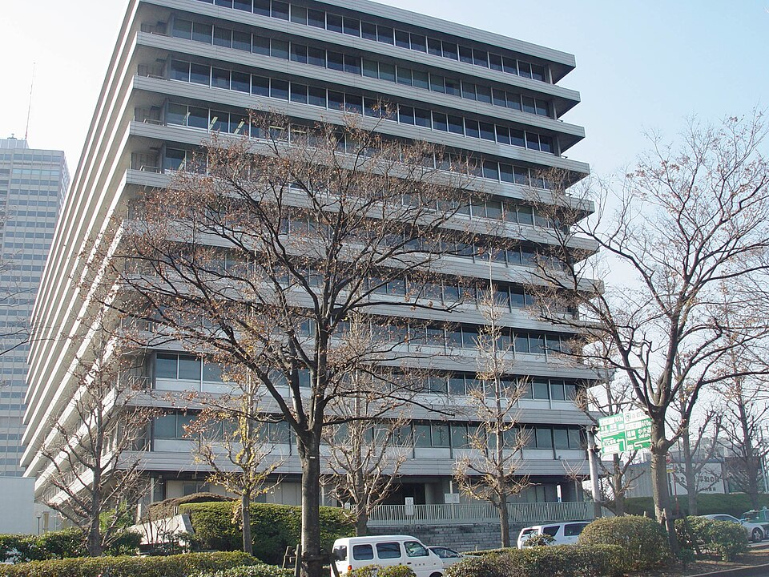
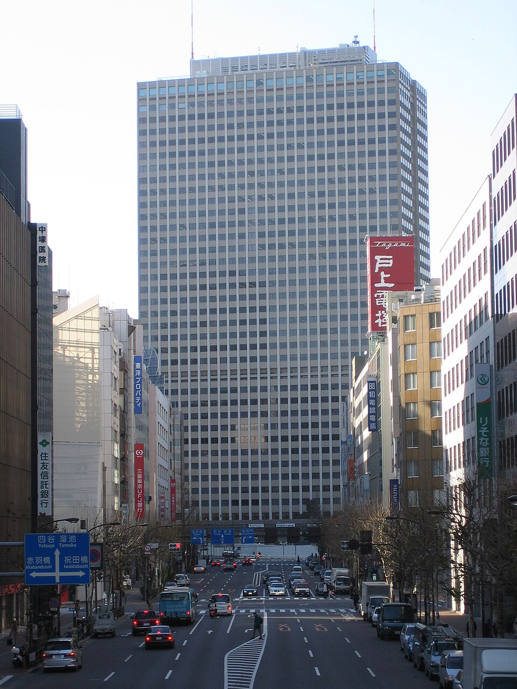
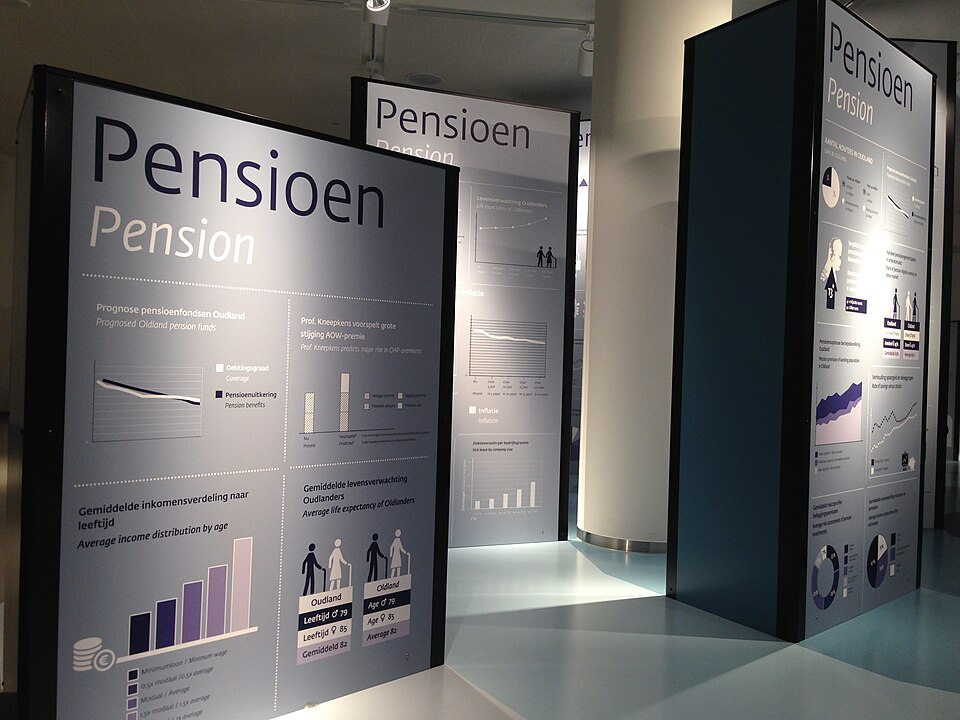
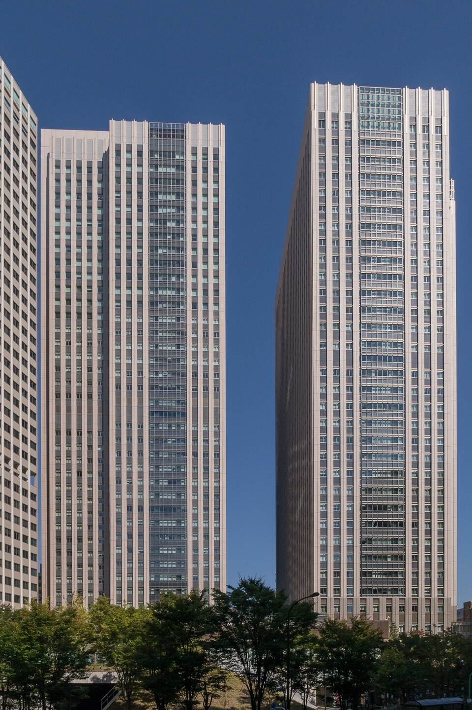

浅
浅川和彦
あさかわ・かずひこ
AIJ投資顧問代表取締役
役割：虚偽の運用実績・基準価額を用いた勧誘と運用を主導したとされた
その後：懲役15年、没収・追徴。刑確定12
1989年〜2026年
AIJは、実質運用していたファンドの損失を隠し、虚偽の運用実績と基準価額を示して厚生年金基金などから資金を集めた。1
AIJ、販売会社ITM証券、海外ファンド・管理会社などを経由する構造で、2010年度末には84基金。約1,852億円の契約資産と報じられた。2
浅川和彦、高橋成子、西村秀昭は有罪となり、登録取消しや業務停止、制度改正。2024年の被害回復手続へ事件は展開した。3

AIJの前身会社は1989年4月に設立されたと報じられ、浅川和彦は2004年6月に代表取締役へ就任し、同年8月に社名がAIJ投資顧問へ変更されたとされる。企業年金や厚生年金基金を顧客とし、2010年度末には84基金、約1,852億円の契約資産が報じられた。大きな契約資産を扱う会社として、運用実績の説明と顧客資産の確認が各段階で必要となる構造だったが、基金別の損失額は本調査で未確認である。2002年5月頃から2012年1月頃までが東京地検公告の対象犯罪行為期間とされる。前身会社の設立、代表取締役就任、社名変更、契約資産の拡大という経過は確認できるが。各年度の運用判断を誰が承認したかを示す社内記録は本調査で取得できなかった。顧客が提示資料をどの会議で審査したか、信託銀行や監査事務所がどの段階で数値を確認したかも、個別には確認できない。したがって、ここでは公的資料に記載された会社間の関係と数値を中心に整理する。145
AIJが実質運用するAIMグローバルファンドでは、純資産額が過小となっていたにもかかわらず、運用実績と一口当たり純資産額が順調に増加しているような資料が年金基金の担当者へ示されたと。証券取引等監視委員会は告発内容を記載した。販売会社の営業員を介して投資一任契約を締結させる構造であり、契約を決める担当者が参照した数字と、実際の資産状態の間に差が生じていた。2
犯則嫌疑者３名は、共謀の上、犯則嫌疑法人AIJ投資顧問株式会社の業務に関し、真実は、犯則嫌疑法人が実質的に運用する「AIMグローバルファンド」の純資産額が過小となっていたにもかかわらず、その情を秘し、あたかも同ファンドの運用実績は好調であり、一口当たり純資産額は順調に増加している旨の虚偽の運用実績等を記載した資料を年金基金の運用担当者らに提示するなどし、当該年金基金をして犯則嫌疑法人との間で年金投資一任契約を締結させようと企て、企業年金基金事務所等において、同基金の担当者らに対し、同ファンドの販売会社の営業員を介し、前記虚偽の運用実績及び一口当たり純資産額等を記載した資料を示すなどし、同基金をして犯則嫌疑法人との間で年金投資一任契約を締結させ、もって投資一任契約の締結に関し、偽計を用いたものである。
意味：実態と虚偽資料の落差、販売会社の営業員を介した勧誘の構造を、当局が犯則事実として記述している。
ITM証券は販売窓口となり、顧客にファンド購入を勧誘した。監視委員会は、少なくとも2007年10月以降、AIJがITMと一体となって虚偽の基準価額や運用実態を記載したリーフレットを66の顧客へ配布したと認定した。国会では、西村秀昭が監査報告書を確認せずAIJへ渡す運用を説明し、AIJがITM株式の90％以上を保有する親子関係だったと答弁した。販売を担う会社と運用を担う会社の役割が分かれていても、株式保有と指示の関係が説明の確認手続に影響した。36
○佐々木（憲）委員 浅川参考人は、二〇〇四年ごろから、監査報告書が届いたら開封せずにＡＩＪに渡しなさいということをアイティーエム証券に指示していたと言われていますが、これは事実でしょうか。なぜそのようなことを指示したんでしょうか。 ○浅川参考人 この件につきましては、現在強制調査中ということもあって、申しわけありませんが、微妙な意味を込めていますので、ちょっと発言は差し控えたいと思います。 ○佐々木（憲）委員 これは極めて重要な事実でありまして、回答がないというのは私はおかしいと思うんですよ。 ○西村参考人 監査報告書については、当社で見ないで持ってくるようにというふうな形でずっと続いていました。最初の二年ぐらいは、先ほどもお話ししましたように、当社で見ていた時期もありますけれども、それ以降については、見ないでそのままＡＩＪに渡していたという状況です。 ○西村参考人 当社とＡＩＪとの関係は、当時、九〇％以上の株をＡＩＪが握っているという親子関係にありましたので……（発言する者あり）命令と言われましたけれども、言われたらそのとおりにやるという状況でした。
意味：監査報告書を販売会社が確認せずAIJへ渡していた経緯と、両社の支配関係が本人答弁で示される。
監視委員会は、AIJが著しく価値を毀損したファンドを虚偽の基準価額で購入するよう指図し、AIJ社長が実質的に支配する投資事業組合に外国投資信託受益証券を買い受けさせるなど。ファンド財産を不当に流出させたと認定した。顧客資金はファンド、海外管理会社、受託銀行。監査事務所を含む構造に置かれていた。海外ファンドの所在地としてケイマン諸島等が資料に登場するが、租税回避や違法送金の最終認定は未確認である。37
当社は、顧客である年金基金等の財産の運用に当たって、著しく価値が毀損していることを知りながら自らが偽装した虚偽の基準価額をもってＡＩＭファンドを購入することを指図している。 また、当社は、ＡＩＭファンドが出資している投資事業組合（当社社長が実質的に支配）に解約請求に係る外国投資信託受益証券を虚偽の基準価額で買い受けさせているなど、ファンドの財産を不当に流出させている。 このように、当社は投資運用業者として、権利者である顧客のため忠実に業務を行っていないと認められる。
意味：損失を知りながら虚偽価額で運用を継続し、社長が実質支配する組合へ資産を流出させたという、経営者責任の核心部分である。
2009年2月以降、金融庁や監視委員会事務局の担当部署へAIJ投資について複数回の情報提供が行われたと金融庁は説明した。監視委員会は2012年1月23日に検査を始め、2月17日に疑義を金融庁へ連絡した。金融庁は2月24日にAIJへ1か月の業務停止命令を出し、投資一任業者263社の一斉調査を表明した。発覚時点では毀損額と原因を確定できず、投資家に説明できない状況を行政処分の根拠として説明した。89
今般の行政処分（業務停止命令及び業務改善命令）でございますが、顧客資産が毀損していると見られていることから、投資者保護の観点から実施したものであります。 なお、毀損額及び毀損原因などは、現在、証券取引等監視委員会が検査を継続中であることから、当局としては現時点では確たる内容を申し上げることは困難であります。 それから経緯につきましては、（略）2月17日に、証券取引等監視委員会より、（略）顧客資産の運用状況について疑義が生じている旨の連絡を受けました。（略）当社より「投資一任契約に基づいて行う顧客資産の運用状況について、現時点では毀損額、毀損原因は精査中であるものの、投資家に説明できない状況にある。」という旨の報告を昨日の夕刻受けました。
意味：発覚直後の当局が、損失額や原因を確定できないまま、投資家に説明できない状態を根拠に処分した経緯を示す。
2012年3月22日に監視委員会が行政処分を勧告し、翌23日に金融庁はAIJの登録を取り消し、ITM証券へ6か月の業務停止命令を出した。同日、監視委員会はAIJなど関係先を強制調査した。7月9日に浅川和彦、高橋成子、西村秀昭を告発し、7月30日の追加告発を経て。9月19日に告発・起訴された。国会ではAIJだけでなくITMも同時に検査対象とした判断、関係者の紹介をめぐる証言、当局への情報提供の扱いが審議された。10112
ＡＩＪ投資顧問株式会社及びアイティーエム証券株式会社に対する検査において、顧客に対する虚偽告知等の法令違反が認められたとして、3月22日（木）、証券取引等監視委員会から行政処分を行うように勧告を受けました。 これに基づきまして、本日3月23日、金曜日、両社に対し、それぞれ金融商品取引法第52条第1項及び同法第51条の規定に基づき、行政処分を行ったところであります。 今回の行政処分は、ＡＩＪ投資顧問株式会社の登録を取り消し、顧客資産の保全が円滑に進むよう業務改善命令を発出するとともに、アイティーエム証券株式会社に業務停止命令6か月及び顧客資産の保全が円滑に進むよう業務改善命令を発出したものであります。 本件について、このような事態に至ったことは極めて遺憾であります。なお、ＡＩＪ投資顧問株式会社他関係先に対しましては、本日、証券取引等監視委員会が強制調査に着手したと聞いております。
意味：AIJとITMへの行政処分、強制調査への移行が同日に公表された。
東京地裁は2013年12月18日、浅川に懲役15年、高橋と西村に各懲役7年を言い渡し、AIJ名義預金債権約5億6,884万円の没収と。3人に連帯して約156億9,809万円の追徴を命じた。東京高裁は2015年3月13日に控訴を棄却し、最高裁は2016年4月12日に上告を棄却した。2024年1月11日、東京地検は犯罪被害財産支給手続の開始を決定したが、最終支給額と基金別配分は本調査で未確認であり。被害回復の最終状態は確認できない。125
（水増ししたNAV（純資産額）によって騙し、騙した資金を自分の懐に入れようとしたのではないか、との問いに対し、） 騙すつもりはなかった。騙し取る意思もなかったし、実際、取ってもいない。 （もし証券監視委の強制調査が入らず、逮捕されることなく営業を続けていたら、現在どうなっていると考えるか、との問いに対し、） ここ１年くらいの相場を見れば、損失を取り戻せていたと思う。 地裁判決（要旨） 虚偽のNAVや運用実績等を記載した資料を示しつつ本件ファンドの買付けを勧誘する行為は、各年金基金にとって本件ファンドを買い付けるか否かを判断する基礎となる重要な事項を偽るものであるから、詐欺罪にいう人を欺く行為にほかならず、被告人浅川には詐欺罪が成立する。
意味：浅川の「回復するつもりだった」という説明と、判決の詐欺認定が正面から対置されている。
金融庁は国内信託銀行による基準価額と監査報告書の直接取得、運用報告書の記載充実、虚偽報告への制裁強化。監督・検査の見直しを示した。厚生年金基金については2013年通常国会で制度改正法が成立し、2014年4月1日以降、新規設立が認められなくなった。事件の評価では、運用会社、販売会社、信託銀行、監査人、基金。行政のどこに責任を配分するかが争点として残る。年金基金側の管理責任、複数回の情報提供を活用できなかった経緯、没収・追徴と被害回復の関係も。資料上は単一の主体に帰属させられていない。1314
この案には、第三者によるチェック、いわゆる信託銀行ですけれども、第三者によるチェックが有効に機能する仕組み、それから二つ目には、運用報告書等の記載内容の充実など、年金基金等の顧客が問題を発見しやすくする仕組み、三つには、投資一任業者等による「虚偽」の報告や勧誘等の不正行為に対する制裁の強化、四つには、投資運用業者等に対する規制、監督、そして検査の在り方の見直し、といった内容を盛り込んでおります。 内容が明らかになるにつれて、この事案の深刻さ、許し難い行為、顧客の年金基金に手を付ける、その運用のためにさらに悪事を重ねていくというような、これは許し難い行為だったと、激しく私は怒りを持っております。
意味：事件後の制度改革案と、担当大臣が不正の性質を「年金基金に手を付ける」行為と表現した場面である。



| AIJ投資顧問本店所在地 | 東京都中央区（詳細番地は本資料で未確認） | 運用会社本店 | 10 |
| ITM証券所在地 | 東京都中央区（詳細番地未確認） | 販売会社 | 11 |
| 東京地方裁判所 | 東京都千代田区霞が関1-1-4 | 一審公判 | 24 |
| 東京高等裁判所 | 東京都千代田区霞が関1-1-4 | 控訴審 | 25 |
| 最高裁判所 | 東京都千代田区隼町4-2 | 上告審 | 26 |
| 東京地方検察庁 | 東京都千代田区霞が関1-1-1 | 起訴・被害回復手続 | 27 |
| 金融庁 | 東京都千代田区霞が関3-2-1 | 行政処分・制度改正 | 28 |
| 厚生労働省 | 東京都千代田区霞が関1-2-2 | 厚生年金基金制度所管 | 29 |
| 衆議院議員会館・国会周辺 | 東京都千代田区永田町 | 国会審議 | 30 |
| 霞が関ビルディング | 東京都千代田区霞が関3-2-5 | 金融庁・厚労省周辺の行政地区 | 31 |
資金は年金基金からITM証券の営業窓口を経てAIMグローバルファンド等へ向かった。AIJは実態と異なる運用実績・基準価額を報告し、投資事業組合への財産流出も認定された。53
あさかわ・かずひこ
AIJ投資顧問代表取締役
役割：虚偽の運用実績・基準価額を用いた勧誘と運用を主導したとされた
その後：懲役15年、没収・追徴。刑確定12
たかはし・しげこ
AIJ投資顧問取締役
役割：AIJ側の共同被告人
その後：懲役7年。刑確定12
にしむら・ひであき
ITM証券社長
役割：販売会社の営業活動を指揮したと判決要旨に記載された
その後：懲役7年。刑確定12
年金コンサルタント関係者
役割：AIJを基金へ紹介・推奨したかを国会で追及された
その後：証言の食い違いは本調査で未確認18
金融担当大臣
役割：業務停止、一斉調査、情報提供について会見・答弁した
その後：2012年の行政対応を説明15
金融担当大臣
役割：制度・監督の見直し案を説明した
その後：第三者チェックなどの強化案を説明20
投資運用業者
役割：ファンドを実質運用し顧客へ報告・勧誘した法人
その後：登録取消し、業務改善命令10
販売会社
役割：AIMグローバルファンドの営業窓口
その後：業務停止6か月、業務改善命令8
行政機関
役割：検査、勧告、強制調査。告発を実施
その後：2012年に3人を告発2

行政機関
役割：報告徴求、行政処分、一斉調査、制度見直しを担当
その後：AIJ登録取消し。ITM業務停止10
検察機関
役割：告発を受けて起訴し被害回復手続を開始
その後：2024年に犯罪被害財産支給手続開始決定5
顧客・資金の出し手
役割：AIJへ運用を委託した主体
その後：基金別損失額は本調査で未確認32
チェック関係者
役割：基準価額・監査報告書の確認が問題となった
その後：直接取得など制度改正の対象13
ファンド関係者
役割：AIMグローバルファンドの運用構造に登場
その後：個別の役割・金額内訳は未確認7
相関図は、AIJとITMの販売・運用関係、年金基金への資金流入、投資事業組合への流出。外部関係者と当局・司法の対応を示す。線の種類は、協力、対立、金銭、偽計、上下関係。闇の接点を表す。
上司と部下・共犯関係。両名はAIJの代表取締役と取締役として起訴され、同一事件で有罪となった。共謀の具体的な役割分担の詳細は判決全文を本調査で取得できず、未確認。12
資金の出し手と受け手・販売関係。AIJが実質運用するファンドをITMが営業窓口として販売した。5
上司と部下。AIJ側の虚偽資料がITM営業員を介して基金担当者に示されたとされる。2
共同被告人。AIJ取締役とITM社長として同一の起訴事実に関与した。12
上司と部下。浅川が実質支配する投資事業組合へのファンド財産流出が認定された。個々の担当者名は未確認。3
上司と部下。ITMが顧客への販売窓口となったが、担当者ごとの認識・指示系統は未確認。5
対立・確執。2012年検査で、AIJ側の資料と実態の乖離が調査対象となった。3
対立・確執。東京地検は浅川らを詐欺・金融商品取引法違反で起訴した。9
対立・確執。一審懲役15年、控訴棄却、上告棄却で刑が確定した。12
対立・確執。懲役7年が確定した。12
対立・確執。懲役7年が確定した。12
対立・追及。AIJを基金に紹介・推奨したかについて証言内容の食い違いを追及された。18
資金の出し手と受け手。AIJを含むファンドを基金に情報提供したと報道取材で述べた一方、国会答弁との違いが問題化した。18
上司と部下。大臣会見で監視委員会からの連絡、業務停止、一斉調査を説明した。15
上司と部下。大臣会見で第三者チェック、報告書、罰則。監督検査の強化を説明した。20
ＡＩＪ投資顧問株式会社（以下「当社」という。）は、投資一任契約を締結している年金基金等の顧客（以下「顧客」という。）に対し、かかる投資一任契約に基づく運用対象資産として当社が運用している外国投資信託「ＡＩＭグローバルファンド」（以下「ＡＩＭファンド」という。）の買付けを指図しているが、顧客に対してＡＩＭファンドの各サブファンドについて虚偽の基準価額を算出・報告していた事実が認められた。 虚偽の基準価額の算定に当たっては、当社社長は、自らの相場観に基づき決定した一定の数値を虚偽の基準価額として算出していた。 当社は投資一任契約の締結の勧誘について、少なくとも平成１９年１０月以降、６６の顧客（年金基金）に対し、ＩＴＭと一体となって虚偽の基準価額や当該基準価額に基づく運用実態が記載されたリーフレットを配布し、投資一任契約の締結の勧誘を行っていることが認められた。
意味：虚偽の数値が社長の判断で作られ、ITMとの共同勧誘によって顧客に配布されたという認定である。
公的資料で確認できる中心は、海外ファンド・管理会社、投資事業組合、販売会社。年金コンサルタント関係者との接点である。暴力団、総会屋、仕手筋との関係や政治献金は本調査で公的認定を確認できない。
海外ファンド、海外管理会社、監査事務所 認定
浅川和彦、投資事業組合 認定
AIMグローバルファンド等 指摘
石山勲等 報道
個別氏名・組織 報道
組織名・人物 確認できない
組織名・人物 確認できない
政治家・政党 確認できない
当社は、顧客である年金基金等の財産の運用に当たって、著しく価値が毀損していることを知りながら自らが偽装した虚偽の基準価額をもってＡＩＭファンドを購入することを指図している。 また、当社は、ＡＩＭファンドが出資している投資事業組合（当社社長が実質的に支配）に解約請求に係る外国投資信託受益証券を虚偽の基準価額で買い受けさせているなど、ファンドの財産を不当に流出させている。 このように、当社は投資運用業者として、権利者である顧客のため忠実に業務を行っていないと認められる。
意味：損失を知りながら虚偽価額で運用を継続し、社長が実質支配する組合へ資産を流出させたという、経営者責任の核心部分である。
| AIJ・ITM関係者 | 0円 | 0円 | 個人別の利得は本調査で未確認 | 12 |
| 年金基金・加入者 | 0億円 | 1852億円 | 契約資産約1,852億円。基金別損失額は未確認 | 4 |
| 被害基金 | 0円 | 0円 | 2024年に支給手続開始。最終支給額は未確認 | 5 |
| 国・当局 | 0円 | 0円 | 一斉調査・検査・被害回復・制度改正の行政コストは未確認 | 21 |
| 同業投資運用業者 | 0円 | 0円 | 一斉調査と報告・チェックコスト。金額は未確認 | 20 |
| 信託銀行・監査関係者 | 0円 | 0円 | 基準価額照合など追加的責務。金額は未確認 | 13 |
| 東京地裁 | 2013-12-18 | 懲役15年、没収約5億6,884万円、3人連帯追徴約156億9,809万円 |
| 東京高裁 | 2015-03-13 | 控訴棄却 |
| 最高裁 | 2016-04-12 | 上告棄却 |
詐欺。金融商品取引法違反（投資一任契約締結に係る偽計）。確定12
| 東京地裁 | 2013-12-18 | 懲役7年 |
| 東京高裁・最高裁 | 2015-03-13・2016-04-12 | 控訴・上告棄却 |
詐欺、金融商品取引法違反（投資一任契約締結に係る偽計）。確定12
| 東京地裁 | 2013-12-18 | 懲役7年 |
| 東京高裁・最高裁 | 2015-03-13・2016-04-12 | 控訴・上告棄却 |
詐欺、金融商品取引法違反（投資一任契約締結に係る偽計）。確定12
| 金融庁 | 2012-03-23 | 登録取消し、業務改善命令 |
顧客に対する虚偽告知等。確定10
| 金融庁 | 2012-03-23 | 業務停止6か月、業務改善命令 |
顧客に対する虚偽告知等。確定8
| 東京地検 | 2024-01-11 | 支給手続開始決定。最終支給額・基金別配分は未確認 |
被害回復給付。手続開始5
犯則嫌疑者３名は、共謀の上、犯則嫌疑法人AIJ投資顧問株式会社の業務に関し、真実は、犯則嫌疑法人が実質的に運用する「AIMグローバルファンド」の純資産額が過小となっていたにもかかわらず、その情を秘し、あたかも同ファンドの運用実績は好調であり、一口当たり純資産額は順調に増加している旨の虚偽の運用実績等を記載した資料を年金基金の運用担当者らに提示するなどし、当該年金基金をして犯則嫌疑法人との間で年金投資一任契約を締結させようと企て、企業年金基金事務所等において、同基金の担当者らに対し、同ファンドの販売会社の営業員を介し、前記虚偽の運用実績及び一口当たり純資産額等を記載した資料を示すなどし、同基金をして犯則嫌疑法人との間で年金投資一任契約を締結させ、もって投資一任契約の締結に関し、偽計を用いたものである。
意味：実態と虚偽資料の落差、販売会社の営業員を介した勧誘の構造を、当局が犯則事実として記述している。
ＡＩＪ投資顧問株式会社（以下「当社」という。）は、投資一任契約を締結している年金基金等の顧客（以下「顧客」という。）に対し、かかる投資一任契約に基づく運用対象資産として当社が運用している外国投資信託「ＡＩＭグローバルファンド」（以下「ＡＩＭファンド」という。）の買付けを指図しているが、顧客に対してＡＩＭファンドの各サブファンドについて虚偽の基準価額を算出・報告していた事実が認められた。 虚偽の基準価額の算定に当たっては、当社社長は、自らの相場観に基づき決定した一定の数値を虚偽の基準価額として算出していた。 当社は投資一任契約の締結の勧誘について、少なくとも平成１９年１０月以降、６６の顧客（年金基金）に対し、ＩＴＭと一体となって虚偽の基準価額や当該基準価額に基づく運用実態が記載されたリーフレットを配布し、投資一任契約の締結の勧誘を行っていることが認められた。
意味：虚偽の数値が社長の判断で作られ、ITMとの共同勧誘によって顧客に配布されたという認定である。
当社は、顧客である年金基金等の財産の運用に当たって、著しく価値が毀損していることを知りながら自らが偽装した虚偽の基準価額をもってＡＩＭファンドを購入することを指図している。 また、当社は、ＡＩＭファンドが出資している投資事業組合（当社社長が実質的に支配）に解約請求に係る外国投資信託受益証券を虚偽の基準価額で買い受けさせているなど、ファンドの財産を不当に流出させている。 このように、当社は投資運用業者として、権利者である顧客のため忠実に業務を行っていないと認められる。
意味：損失を知りながら虚偽価額で運用を継続し、社長が実質支配する組合へ資産を流出させたという、経営者責任の核心部分である。
（水増ししたNAV（純資産額）によって騙し、騙した資金を自分の懐に入れようとしたのではないか、との問いに対し、） 騙すつもりはなかった。騙し取る意思もなかったし、実際、取ってもいない。 （もし証券監視委の強制調査が入らず、逮捕されることなく営業を続けていたら、現在どうなっていると考えるか、との問いに対し、） ここ１年くらいの相場を見れば、損失を取り戻せていたと思う。 地裁判決（要旨） 虚偽のNAVや運用実績等を記載した資料を示しつつ本件ファンドの買付けを勧誘する行為は、各年金基金にとって本件ファンドを買い付けるか否かを判断する基礎となる重要な事項を偽るものであるから、詐欺罪にいう人を欺く行為にほかならず、被告人浅川には詐欺罪が成立する。
意味：浅川の「回復するつもりだった」という説明と、判決の詐欺認定が正面から対置されている。
（あなたは詐欺の共謀で起訴されているが、現在どういう気持ちか、との問いに対し、） 私も含めＩＴＭも彼らに騙された。彼らと相談しながらお客を騙したとは思っていない。不安に思っていた部分を法律的にどう評価されるか分からないが、共謀共同正犯と言われると違和感がある。 運用実績が虚偽との認識はなかった。浅川被告から真実を知らされておらず、欺かれていた。 地裁判決（要旨） 公表NAVが虚偽のものかもしれない旨前記認定の限度で認識しつつ、被告人浅川の実質的な支配の下とはいえ、本件ファンドの販売会社であるITM証券の代表取締役として年金基金に対する営業活動を指揮し、（略）本件各犯行において相当重要な役割を果たした。
意味：西村の被害者側という主張に対し、判決要旨は認識と営業指揮を認定している。
○佐々木（憲）委員 浅川参考人は、二〇〇四年ごろから、監査報告書が届いたら開封せずにＡＩＪに渡しなさいということをアイティーエム証券に指示していたと言われていますが、これは事実でしょうか。なぜそのようなことを指示したんでしょうか。 ○浅川参考人 この件につきましては、現在強制調査中ということもあって、申しわけありませんが、微妙な意味を込めていますので、ちょっと発言は差し控えたいと思います。 ○佐々木（憲）委員 これは極めて重要な事実でありまして、回答がないというのは私はおかしいと思うんですよ。 ○西村参考人 監査報告書については、当社で見ないで持ってくるようにというふうな形でずっと続いていました。最初の二年ぐらいは、先ほどもお話ししましたように、当社で見ていた時期もありますけれども、それ以降については、見ないでそのままＡＩＪに渡していたという状況です。 ○西村参考人 当社とＡＩＪとの関係は、当時、九〇％以上の株をＡＩＪが握っているという親子関係にありましたので……（発言する者あり）命令と言われましたけれども、言われたらそのとおりにやるという状況でした。
意味：監査報告書を販売会社が確認せずAIJへ渡していた経緯と、両社の支配関係が本人答弁で示される。
○豊田委員 時系列的にいいますと、最近の取材で、某大手新聞社の取材、三月二日の取材に対し、あなたは、推奨する複数のファンドの中にＡＩＪを入れ、基金に情報提供した、ＡＩＪが基金に説明する際、同席したことがある、このように新聞社の取材に対して答えているにもかかわらず、三月二十七日、衆議院の参考人質疑においては、ＡＩＪを特に引き合わせるというようなことはした覚えはない、こうはっきりおっしゃいました。 ところが、その二日後の民主党の検証会議の中で、（略）厚生年金基金の調査で、石山証人の会社からＡＩＪを紹介されたとの回答が五件あった、そのことを指摘されて、自分が主催したセミナーで話したかもしれないと説明した。 ある意味では、二転、三転、主張が変わっているんですが、一体どこが正しいのか。 ○石山証人 セミナーをやるときに、四社の中に一時期ＡＩＪを入れていたのは、それは確かです。で、その際に、特別に何か付加的に説明をしたかというと、それはございません。
意味：基金への紹介・推奨をめぐる石山証人の説明の変化が、国会で直接追及された場面である。
○佐々木（憲）委員 今回、虚偽によって年金資産を失った基金の加入者、それから受給者等、八十八万人が不利益をこうむっているわけであります。場合によっては、中小零細企業が年金倒産に至るというおそれもある、こういう重大な事態でありますので、これは今後、被害者に対する十分な補償、これをどのようにやっていくのか、それから、二度とこういうことが起こらないように、その体制をどのようにつくるのか、この点について最後に大臣の見解をお聞きしたいと思います。 ○自見国務大臣 今回の一連の事件において、厚生年金基金、あるいはいわゆる厚生年金、上乗せ三階分と申しますし、あるいは個人年金と申しますけれども、ここが結果として大きな被害を受ける可能性が非常に強いわけでございますが、今、先生、大変言いにくい話でございますけれども、やはり基本的にこれは自己責任、管理責任がございまして、民民でやっていくというのは時代の大きな流れでございまして、そういったことで、それが原則でございます。
意味：被害の深刻さを認めながら、金融担当相が自己責任・管理責任を原則として答弁した箇所である。
今般の行政処分（業務停止命令及び業務改善命令）でございますが、顧客資産が毀損していると見られていることから、投資者保護の観点から実施したものであります。 なお、毀損額及び毀損原因などは、現在、証券取引等監視委員会が検査を継続中であることから、当局としては現時点では確たる内容を申し上げることは困難であります。 それから経緯につきましては、（略）2月17日に、証券取引等監視委員会より、（略）顧客資産の運用状況について疑義が生じている旨の連絡を受けました。（略）当社より「投資一任契約に基づいて行う顧客資産の運用状況について、現時点では毀損額、毀損原因は精査中であるものの、投資家に説明できない状況にある。」という旨の報告を昨日の夕刻受けました。
意味：発覚直後の当局が、損失額や原因を確定できないまま、投資家に説明できない状態を根拠に処分した経緯を示す。
ＡＩＪ投資顧問株式会社及びアイティーエム証券株式会社に対する検査において、顧客に対する虚偽告知等の法令違反が認められたとして、3月22日（木）、証券取引等監視委員会から行政処分を行うように勧告を受けました。 これに基づきまして、本日3月23日、金曜日、両社に対し、それぞれ金融商品取引法第52条第1項及び同法第51条の規定に基づき、行政処分を行ったところであります。 今回の行政処分は、ＡＩＪ投資顧問株式会社の登録を取り消し、顧客資産の保全が円滑に進むよう業務改善命令を発出するとともに、アイティーエム証券株式会社に業務停止命令6か月及び顧客資産の保全が円滑に進むよう業務改善命令を発出したものであります。 本件について、このような事態に至ったことは極めて遺憾であります。なお、ＡＩＪ投資顧問株式会社他関係先に対しましては、本日、証券取引等監視委員会が強制調査に着手したと聞いております。
意味：AIJとITMへの行政処分、強制調査への移行が同日に公表された。
この案には、第三者によるチェック、いわゆる信託銀行ですけれども、第三者によるチェックが有効に機能する仕組み、それから二つ目には、運用報告書等の記載内容の充実など、年金基金等の顧客が問題を発見しやすくする仕組み、三つには、投資一任業者等による「虚偽」の報告や勧誘等の不正行為に対する制裁の強化、四つには、投資運用業者等に対する規制、監督、そして検査の在り方の見直し、といった内容を盛り込んでおります。 内容が明らかになるにつれて、この事案の深刻さ、許し難い行為、顧客の年金基金に手を付ける、その運用のためにさらに悪事を重ねていくというような、これは許し難い行為だったと、激しく私は怒りを持っております。
意味：事件後の制度改革案と、担当大臣が不正の性質を「年金基金に手を付ける」行為と表現した場面である。
浅川和彦らが、AIJ投資顧問株式会社（以下「AIJ」という。）等が実質的に運用する「AIMグローバルファンド」に関する虚偽の運用実績又は虚偽の一口当たり純資産額等を記載した資料を示し、又は、同ファンドを購入した顧客へ真正な運用実績や真正な一口当たり純資産額を報告する意思がないのに、その情を秘して、同ファンドの購入を勧誘するなどし、被害者をして、同ファンドがそのとおりの運用実績又は純資産額を有するもの、又は、浅川らが真正な運用実績や一口当たり純資産額を報告するものと誤信させて同ファンドの買い付けを決定させ、アイティーエム証券株式会社（以下「ITM」という。）名義の預金口座に買付代金（手数料・消費税込み）を入金させるなどした行為 ITMが営業窓口になり、顧客に対し、AIJが実質的に運用する「AIMグローバルファンド」の購入を勧誘。
意味：被害回復手続の公告でも、虚偽説明や誤信とITMの営業窓口という構造が明記されている。
浅川和彦：「金をだまし取るつもりはなかった」と詐欺罪無罪を主張したと報じられた。35
東京地裁：虚偽のNAVや運用実績を示す行為は重要事項を偽る人を欺く行為で詐欺罪が成立するとした。36
西村秀昭：運用実績が虚偽との認識はなく、浅川から真実を知らされず欺かれていたと主張した。36
東京地裁判決要旨：公表NAVが虚偽かもしれない旨を認識し、ITM代表として営業活動を指揮し相当重要な役割を果たしたとした。36
金融庁：2009年2月以降、複数回の情報提供があったと説明した。8
国会での追及：情報提供が検査着手までどう活用されたかが審議された。23